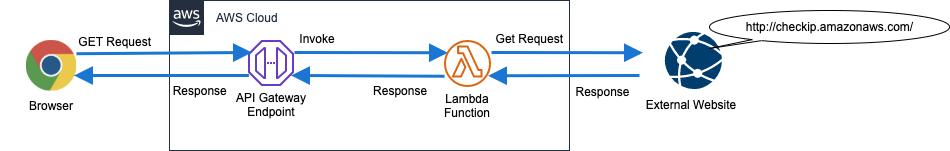
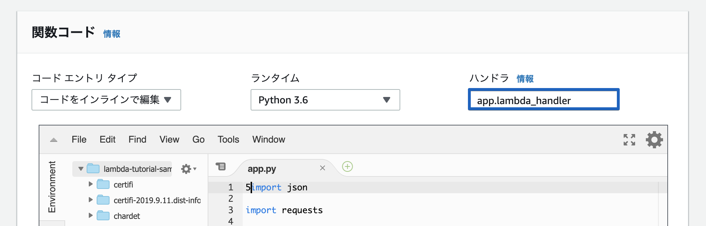
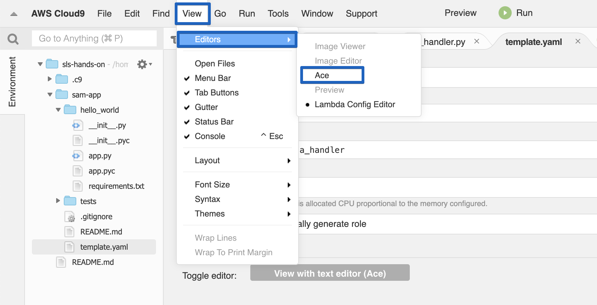

サーバーサイドのIPアドレスをレスポンスするAPI
この課題ではSAMが用意しているサンプルのアプリケーションのコードを確認し､デプロイを行います｡
サンプルアプリにサーバーサイドのIPアドレスをレスポンスするAPIです｡
構成図

サンプルアプリケーションの取得
作業ディレクトリに移動します｡
cd ~/environment
サンプルアプリケーションを取得します｡
sam init -r python3.6
取得できていることを確認します｡
ls sam-app
(例)
hello_world README.md template.yaml tests
ディレクトリ構成
サンプルアプリケーションの構成は下記の様になっています｡
sam-app/
├── hello_world # アプリケーションディレクトリ
│ ├── app.py # Lambda関数
│ ├── app.pyc
│ ├── __init__.py
│ ├── __init__.pyc
│ └── requirements.txt # ライブラリ定義
├── README.md # 説明
├── template.yaml # SAMテンプレート(AWSの構成情報)
└── tests # テストディレクトリ
└── unit # ユニットテストディレクトリ
├── __init__.py
├── __init__.pyc
├── test_handler.py # Lambda関数のテストコード
└── test_handler.pyc
app.py
app.pyはLambda関数として使用されるコードです｡行いたい処理内容を記載します｡
import json import requests # Lambdaハンドラー def lambda_handler(event, context): # 実行処理 try: ip = requests.get("http://checkip.amazonaws.com/") except requests.RequestException as e: print(e) raise e # レスポンス return { "statusCode": 200, "body": json.dumps( {"message": "hello world", "location": ip.text.replace("\n", "")} ), }
Lambdaハンドラー
Lambda関数は作成する際に､ハンドラーを指定します。これはコードを実行する際に､AWS Lambdaがどの関数を呼び出すかの宣言です。

引数は下記の通りです｡
- event: 呼び出し元から受け取るイベントデータです｡このパラメータは通常､Pythonのdict型です｡ 呼び出し元により､構成は異なります｡
- context: ランタイム情報です｡(ハンズオンでは取り扱いません｡)
実行処理
Lambda内で実行する処理を書きます｡
このアプリケーションでは､http://checkip.amazonaws.com/というアクセス元のグローバルIPアドレスをレスポンスするサイトを使って
Lambda関数のグローバルIPアドレスを取得しています｡
例外(requests.RequestException)が発生した場合は､内容をprintで出力します｡
Lambda関数の標準出力はAmazon CloudWatch Logs に保存されます｡
レスポンス
Lambda関数が後続の処理に返す処理結果を記載します｡どのサービスと連携するかによって戻り値の構成は異なります｡
このアプリケーションでは､Amazon API Gateway に返すので､HTTPレスポンス形式です｡
test_handler.py
test_handler.pyはapp.pyのテストコード､つまりLambda関数のテストコードです｡
pytestを利用しています｡
import json import pytest from collections import namedtuple from hello_world import app # テストデータ @pytest.fixture() def apigw_event(): return { # 省略: API GatewayがLambda関数に渡すeventのテストデータです } # テスト def test_lambda_handler(apigw_event, mocker): requests_response_mock = namedtuple("response", ["text"]) requests_response_mock.text = "1.1.1.1\n" request_mock = mocker.patch.object( app.requests, 'get', side_effect=requests_response_mock) ret = app.lambda_handler(apigw_event, "") assert ret["statusCode"] == 200 for key in ("message", "location"): assert key in ret["body"] data = json.loads(ret["body"]) assert data["message"] == "hello world"
テストデータ
API GatewayがLambda関数を呼び出す際のeventをテスト様に生成しています｡
テスト
Lambda関数のテストコードです｡
ユニットテストなので､外部へのリクエストを行う箇所は常に1.1.1.1を受け取るようにモックしています｡
以下のテストを行っています｡
- ステータスコードが200(OK)である
- レスポンスボディに
message,locationという項目を含む - レスポンスボディの
dataはhello worldである
template.yaml
SAM(Serverless Application Model)
はサーバーレス向けのAWS環境構築の為のフレームワークです｡
AWS CloudFormation の拡張で､
サーバーレスアプリケーションを構築する場合はより簡単・少ない記述でインフラストラクチャーを定義する事が可能です｡
SAMはCloudFormationに変換してからAWSにデプロイします｡(AWS上ではCloudFormationとして扱われます)
下記のようなSAMの定義ファイルをSAMのテンプレートと言います｡
AWSTemplateFormatVersion: '2010-09-09' Transform: 'AWS::Serverless-2016-10-31' Description: | sam-app Sample SAM Template for sam-app Globals: Function: Timeout: 3 Resources: HelloWorldFunction: Type: 'AWS::Serverless::Function' Properties: CodeUri: hello_world/ Handler: app.lambda_handler Runtime: python3.6 Environment: Variables: PARAM1: VALUE Events: HelloWorld: Type: Api Properties: Path: /hello Method: get Description: '' MemorySize: '' Outputs: HelloWorldApi: Description: API Gateway endpoint URL for Prod stage for Hello World function Value: 'Fn::Sub': >- https://${ServerlessRestApi}.execute-api.${AWS::Region}.amazonaws.com/Prod/hello/ HelloWorldFunction: Description: Hello World Lambda Function ARN Value: 'Fn::GetAtt': - HelloWorldFunction - Arn HelloWorldFunctionIamRole: Description: Implicit IAM Role created for Hello World function Value: 'Fn::GetAtt': - HelloWorldFunctionRole - Arn
Info
template.yamlを開くとフォームが表示される場合は､View､Editors､Aceと選択してください｡

Globals
このテンプレート内のリソース全体に適用する設定です｡
Funcitonに対してTimeoutを3(秒)に設定しています｡このテンプレートで定義したLambda関数のタイムアウトは3秒に設定するという意味です｡
個々のリソースで設定した場合は､その値が優先されます｡
Resources
リソースの定義です｡
| 項目名 | 項目の説明 | テンプレートの説明 |
|---|---|---|
| Type | 作成するリソースの種類 | AWS::Serverless::FunctionはLambda関数を作成します |
| CodeUri | Lambda関数のディレクトリ | hello_world/にLambda関数のコードは配置されています |
| Handler | Lambda関数のハンドラー | app.pyのlambda_handler関数を呼び出したいのでapp.lambda_handlerと指定します |
| Runtime | Lambda実行環境 | Python3.6で実行を保証するコードなので､python3.6と指定します |
| Environment | Lambda環境変数 | 定義されていますが､Lambda関数内では使用していません |
| Events | Lambda呼び出し元の定義 | API Gatewayが/helloにGETリクエストを受けた時Lambda関数を呼び出す |
| MemorySize | Lambdaのメモリサイズ | MB単位でLambda関数に割り当てるメモリサイズを指定します(省略するとデフォルト値) |
一見すると､作成されるリソースはLambda関数だけと捉えてしまいがちですが､Eventsで定義している為､API Gatewayも作成されます｡
Outputs
SAM内の変数や作成したリソースの名称などをエクスポートするのに使用します｡
例えば､2つのSAMが存在する際に､デプロイ済みの①のOutputsを②でParameterとして使用します｡
Outputsでエクスポートしておくと､各リソースのマネジメントコンソールを開かずに､CloudFormationのマネジメントコンソールから値の確認ができます｡
このSAMでは以下がOutputsに登録されています｡
- API Gatewayのエンドポイント名
- Lambda関数のARN(ユニークな識別子)
- Lambda関数のIAMロール(AWSリソースへのアクセス権限)
テストの実行
用意ずみのテストを実行します｡
アプリのディレクトリに移動します｡
~/environment/sam-app
必要なライブラリをインストールします｡
pip install --user requests pytest pytest-mock
テストを実行します｡
python -m pytest tests/ -v
(例)
===================================================================== test session starts ===================================================================== platform linux -- Python 3.6.8, pytest-5.1.2, py-1.8.0, pluggy-0.13.0 -- /usr/bin/python36 cachedir: .pytest_cache rootdir: /home/ec2-user/environment/sam-app plugins: mock-1.10.4 collected 1 item tests/unit/test_handler.py::test_lambda_handler PASSED [100%] ====================================================================== 1 passed in 0.14s ======================================================================
デプロイ
アプリのディレクトリに移動します｡
~/environment/sam-app
SAMをCloudFormationに変換します｡
sam build
(例)
2019-09-19 08:46:39 Found credentials in shared credentials file: ~/.aws/credentials 2019-09-19 08:46:39 Building resource 'HelloWorldFunction' 2019-09-19 08:46:40 Running PythonPipBuilder:ResolveDependencies 2019-09-19 08:46:41 Running PythonPipBuilder:CopySource Build Succeeded Built Artifacts : .aws-sam/build Built Template : .aws-sam/build/template.yaml Commands you can use next ========================= [*] Invoke Function: sam local invoke [*] Package: sam package --s3-bucket <yourbucket>
Lambda関数のコードをS3バケットにアップロードします｡
sam package \ --output-template packaged.yaml \ --s3-bucket ${SAM_ARTIFACT_BUCKET}
(例)
Uploading to 617dccc34fdbe3f07c70eeb7984ad0da 527086 / 527086.0 (100.00%) Successfully packaged artifacts and wrote output template to file packaged.yaml. Execute the following command to deploy the packaged template aws cloudformation deploy --template-file /home/ec2-user/environment/sam-app/packaged.yaml --stack-name <YOUR STACK NAME>
デプロイします｡
sam deploy \ --stack-name lambda-tutorial-sample-app \ --template-file ~/environment/sam-app/packaged.yaml \ --capabilities CAPABILITY_IAM
(例)
Waiting for changeset to be created.. Waiting for stack create/update to complete Successfully created/updated stack - lambda-tutorial-sample-app
Info
講師は参加者のデプロイが完了したタイミングで､デプロイが完了したCloudFormationスタックについて説明を行ってください｡
- イベント
- リソース
- 出力
- テンプレート
- CodeUriが変換されている
API実行
エンドポイント名を確認します｡OutputKey:HelloWorldApiがエンドポイント名です｡
SAMPLE_APP_ENDPOINT_NAME=$(aws cloudformation describe-stacks --stack-name lambda-tutorial-sample-app --region ap-northeast-1 --query 'Stacks[].Outputs[?OutputKey==`HelloWorldApi`].[OutputValue]' --output text) echo ${SAMPLE_APP_ENDPOINT_NAME}
(例)
https://obgtu7b8m9.execute-api.ap-northeast-1.amazonaws.com/Prod/hello/
APIをコールし動作を確認します｡ブラウザで開いても同様に表示される事を確認してください｡
curl ${SAMPLE_APP_ENDPOINT_NAME}
(例)
{"message": "hello world", "location": "13.114.141.65"}%
Info
講師は参加者のAPI実行が完了したタイミングで､HTTPリクエストが処理される流れについて説明を行ってください｡
- API Gateway Endpoint
- Lambda Fuction
- API Gateway Endpoint
削除
作成されたAWSリソースを削除します｡ CloudFormationスタックを削除すると､作成されたAWSリソースも削除されます｡
aws cloudformation delete-stack --stack-name lambda-tutorial-sample-app
aws cloudformation wait stack-delete-complete --stack-name lambda-tutorial-sample-app